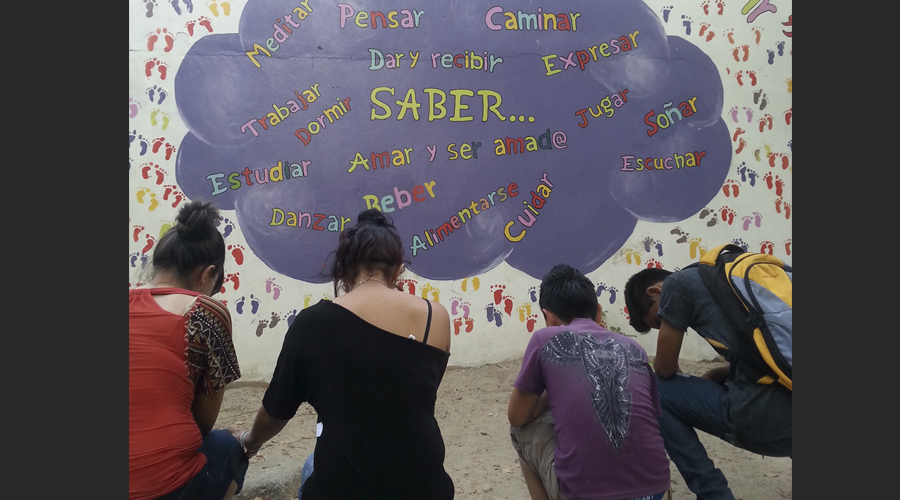
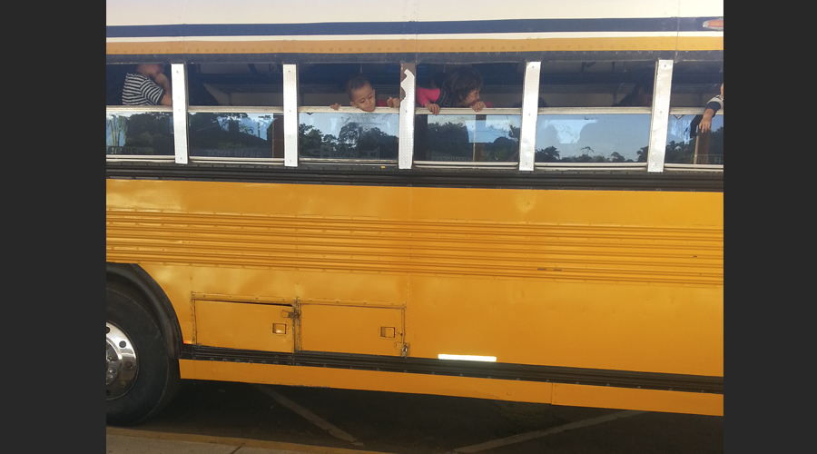

Sin infancia, sin derechos...
México, estado que violenta
Mapa dinámico de deportación infantil
Historias sobre la deportación infantil
-
 En 2013, México deportó casi nueve mil menores de edad centroamericanos.
En 2013, México deportó casi nueve mil menores de edad centroamericanos.
Ver historia -
 Ingrid ya está cansada, a sus diez años no la ilusiona nada, su voz se apaga con la soledad que la acompa&ntile;a,
pese al hacinamiento de la estación migratoria de Tapachula Chiapas, donde sus derechos humanos �y la de los miles de ni&ntile;os
y niñas que ahí son detenidos- son en la práctica letra muerta.
Ingrid ya está cansada, a sus diez años no la ilusiona nada, su voz se apaga con la soledad que la acompa&ntile;a,
pese al hacinamiento de la estación migratoria de Tapachula Chiapas, donde sus derechos humanos �y la de los miles de ni&ntile;os
y niñas que ahí son detenidos- son en la práctica letra muerta.
Ver historia -

"Hay muchas personas que se van del país por las amenazas que recibimos" Viridiana, una adolescente hondureña de 15 años,
tiene tres primos menores de edad que se fueron de su país antes de que la Mara Salvatrucha los matara y ella resiste en el lugar
más violento del mundo.
Ver historia -

Los niños hondureños gritan, juegan, asoman sus cabezas y sacan sus bracitos por las ventanas del viejo camión
escolar norteamericano. Pero no van a la escuela, son llevados de vuelta a su país en calidad de deportados.
Ver historia -
 Acorralado por la impotencia, a sus quince años, no duda: "Entre quedarme encerrado y morir, prefiero morir".
Acorralado por la impotencia, a sus quince años, no duda: "Entre quedarme encerrado y morir, prefiero morir".
Ver historia -
 Cientos de niños y niñas centroamericanos, solos y acompañados, anualmente cruzan la frontera sur en
busca de mejores condiciones de vida.
Cientos de niños y niñas centroamericanos, solos y acompañados, anualmente cruzan la frontera sur en
busca de mejores condiciones de vida.
Ver historia
Gráficas
El falso rescate
Timeline
¡Gracias!